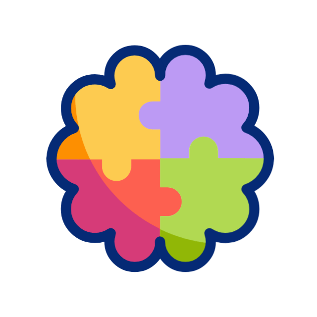

Konsalting
Konsalting usluge koje nudi Montebilans:
Finansijski konsalting – Izrada finansijskih planova i analiza, budžetiranje, upravljanje novčanim tokovima i procJena profitabilnosti poslovanja.
Izrada web sajtova - Izrada web sajtova i internet prezentacija.
Poslovno savjetovanje – Pomoć u planiranju i organizaciji poslovanja, optimizaciji poslovnih procesa i strategijama rasta i razvoja firme.
Konsalting za osnivanje i restrukturiranje firmi – Savjetovanje prilikom osnivanja novih firmi, izbora pravnog oblika, kao i tokom spajanja, preuzimanja ili restrukturiranja postojećih firmi.
Priprema za kreditiranje – Analiza finansijskih izvještaja, priprema dokumentacije i savjeti za uspešno apliciranje za kredite ili druge oblike finansiranja.
Priprema i analiza ugovora – Savjetovanje prilikom sklapanja poslovnih ugovora, procjena finansijskih i pravnih rizika.
Transferne cijene – Savjetovanje i izrada studija o transfernim cijenama za povezana pravna lica u skladu sa zakonskim zahtjevima.
Due diligence – Detaljna finansijska, poreska i pravna analiza prije kupovine, prodaje ili spajanja firmi.
Investicioni konsalting – Analiza isplativosti investicija, priprema investicionih projekata i saveti o izvorima finansiranja.
Računovodstvene agencije koje se bave konsaltingom pružaju stručnu podršku menadžmentu u donošenju poslovnih odluka, smanjenju rizika i poboljšanju ukupnog poslovanja.